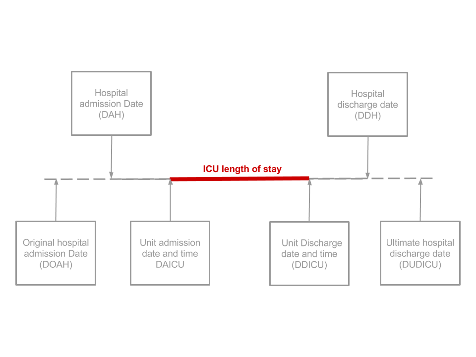
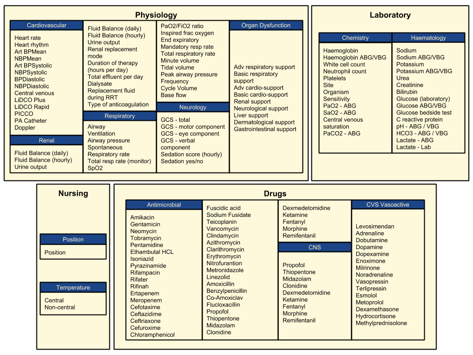
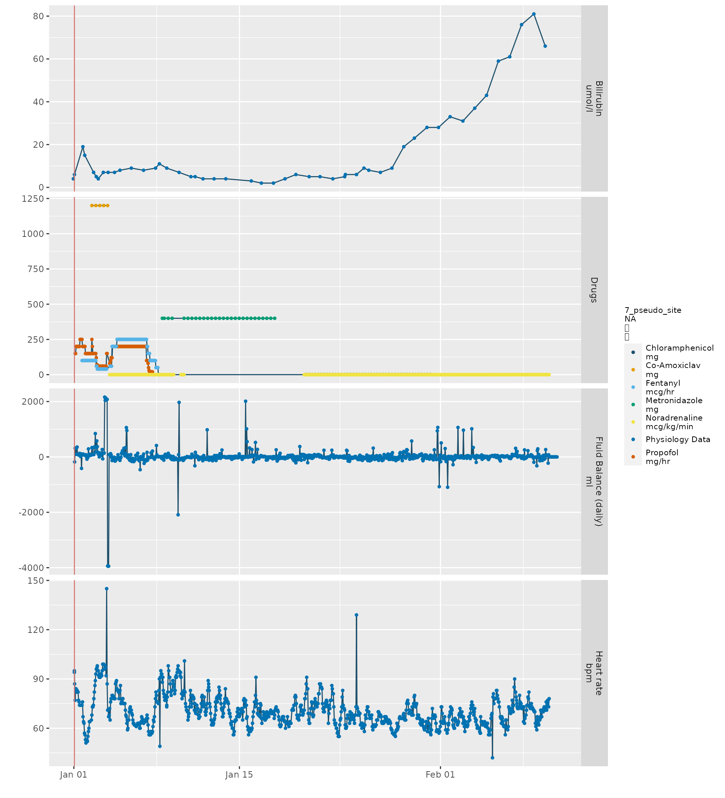

Introduction to CCHIC critical care data
David Perez Suarez & Sinan Shi
2021-07-11
Source:vignettes/cchic_overview.Rmd
cchic_overview.RmdCCHIC data strongly impacts the design of cleanEHR. Complex, heterogeneous, and high resolution longitudinal data is a trend of EHR analysis, which takes advantage of the ever more sophisticated statistical techniques and growing computation capability. CCHIC is a representative example database of such kind. It records 263 fields including 154 time-varying fields of patients during their stay in intensive care units across five NHS trusts in England. The recorded variables include patient demographics, time of admission and discharge, survival status, diagnosis, physiology, laboratory, nursing and drug. The latest database contains 22,628 admissions from 2014 to 2016, with about 119 million data points (~6k per patient).
The anonymised data subset can be obtained here. The selected number of researchers can get the access to the identifiable data UCL IDHS.
Episode and ICU stay timeline
We introduced the concept of ‘episode’ as the fundamental entity of EHRs, which comprises all the data being recorded during the ICU stay. Each episode also contains the demographic information of the patient, ward transferring origin and destination within a hospital and diagnosis information. It allows us to link episode data from a single patient across the entire multi-centre database. The key dates and times are recorded as follow. 
library(cleanEHR)
data("sample_ccd")
# Extract all non-longitudinal data (demographic, time, survival status, diagnosis)
dt <- ccd_demographic_table(ccd, dtype=TRUE)ccd_demographic_table function returns a table of all non-time-varying fields alongside with several derived fields – the fields that are not directly recorded in the original data. Each row of the table is a unique admission, and every column is a non-time-varying data field.
-
pid: unique patient ID derived from NHS number or PAS number. -
AGE: date of birth - unit admission time -
spell: see Spell
print(dt[1:3, ])## ICNNO bed02 bed03 bed05 bed50 NHSNO pasno ADNO DOB PCODE GPCODE
## 1: pseudo_site NULL NULL NULL NULL NULL NULL 1 NULL WC1E NULL
## 2: pseudo_site NULL NULL NULL NULL NULL NULL 2 NULL NULL NULL
## 3: pseudo_site NULL NULL NULL NULL NULL NULL 3 NULL NULL NULL
## ETHNIC SEX HCM HCMEST WKG WKGEST DAH DAICU DWFRD
## 1: C F 164.7 N 41 N 1969-12-12 1970-01-01T01:00:00 NULL
## 2: L F NA Y 73 Y 1969-12-24 1970-01-01T01:00:00 NULL
## 3: A F NA Y 45 Y 1970-01-01 1970-01-01T01:00:00 NULL
## TWFRD DDICU DUDICU DDH DUDH UDIS RESA HLOCA LOCA PA_V3 SCODE CLASSNS CCL2D
## 1: NULL NULL NULL NULL NULL NULL M S W L 370 NULL 1
## 2: NULL NULL NULL NULL NULL NULL M S W L 350 NULL 2
## 3: NULL NULL NULL NULL NULL NULL M S E L 303 NULL 0
## CCL3D RDIS_V3 LOCD TNESSD LEVD DIS DOAH SOHA PLOCA TUADNO DOAICU TUIDI
## 1: 0 NULL NULL NULL NULL D NULL NULL NULL NA NULL NULL
## 2: 21 NULL NULL NULL NULL D NULL NULL NULL NA NULL NULL
## 3: 1 NULL NULL NULL NULL D NULL NULL N NA NULL NULL
## TYPEIHA TGA CCA DLCCA HLOCD SOHD TYPEIHD TGD HDIS CCD DFCCD
## 1: NULL NULL O 1969-12-31 NULL NULL NULL NULL NULL NULL NULL
## 2: NULL NULL N NULL NULL NULL NULL NULL NULL NULL NULL
## 3: NULL NULL NULL NULL NULL NULL NULL NULL NULL NULL NULL
## DESTH_V3 RESD UHDIS PSP CPR_V3 RAICU1 RAICU2 URAICU CHEMOX RADIOX CICIDS
## 1: NULL NULL NULL 0 N NULL NULL NULL 0 0 0
## 2: NULL NULL NULL 0 N NULL NULL NULL 0 0 0
## 3: NULL NULL NULL 0 N NULL NULL NULL 0 0 0
## AMLALLMM CMLCLL LYM META CRRX BPC HE PH AIDS_V3 HV SRD STERX VSCD OCPMH DEP
## 1: 0 0 0 1 0 0 0 0 0 0 0 0 0 N
## 2: 0 0 0 0 0 0 0 0 NULL 0 0 0 0 A
## 3: 1 0 0 0 0 0 0 0 0 0 0 0 0 2.4.2 A
## apache_score apache_prob TNESSA DHRS AMUAI ORGAN_SUPPORT ARSD BRSD ACSD BCSD
## 1: 18 31.17 T NA NULL 1 0 1 0 0
## 2: 12 15.87 T NA 0 4 21 1 3 20
## 3: 53 99.69 T NA NULL 3 1 0 0 1
## RSD NSD LSD DSD GSD ITW_V3 DTW TTW BSDTP DDBSD TDBSD DOD
## 1: 0 0 0 0 1 N NULL NULL 0 NULL NULL 1970-01-01
## 2: 0 2 0 0 21 N NULL NULL 0 NULL NULL 1970-01-22
## 3: 0 1 0 0 0 W 2014-02-05 17:39 0 NULL NULL 1970-01-01
## TOD REFOD OD_V3 DBRICU TBRICU pid spell AGE index
## 1: 13:55 1 N NULL 15:30 20 23 <NA> 1
## 2: 11:20 1 N NULL 15:00 22 25 49.75 2
## 3: 19:17 1 N NULL 21:00 26 30 <NA> 3Data missing are caused by many reasons. We have to understand that in such a large database, the data quality varies. In the anonymised dataset, data can be missing due to security reason. Missing data are either NULL or “NA” depending on the field data type.
Demographic data
Every patient in England has a unique NHS number and PAS (Patient Admission System) number. These can be used to identify a unique patient. Other demographic information can also be found in the CCHIC dataset such as age, sex, GP code, postcode and so on. Most of the demographic data will be removed, pseudonimised, or modified in the anonymised dataset to protect the patient privacy.
Spell
Ward transferring within or beyond ICUs are counted as different episodes respectively. In some research, one may be interested in looking at the sickness development and the treatment history beyond each ICU stays. A spell includes number of episodes from a unique patient which occured in a user defined period One can link episodes by spell ID.
head(ccd_unique_spell(ccd, duration=1)[, c("episode_id", "spell")])## episode_id spell
## 1: 1 1
## 2: 2 2
## 3: 3 3
## 4: 4 4
## 5: 5 5
## 6: 6 6Diagnosis data
Instead of using free text, we adopted ICNARC diagnosis code system to record the diagnosis. The full ICNARC code is a five digit number separated with dots. From left to right each digit represents a higher category of diagnosis. Due to the privacy concerns, in the anonysmised dataset, last two digits will be removed. One may use the function icnarc2diagnosis to look up the diagnosis code.
icnarc2diagnosis("1.1")## [1] "Respiratory (Surgical)"
icnarc2diagnosis("1.1.4")## [1] "Lungs (Surgical)"
icnarc2diagnosis("1.1.4.27.1")## [1] "Bacterial pneumonia (Surgical)"Longitudinal data
CCHIC measures 154 longitudinal data. The full list of longitudinal data are shown below. 
We can also easily plot the data from a single selected admission.
plot_episode(ccd@episodes[[7]], c("h_rate", "bilirubin", "fluid_balance_d"))